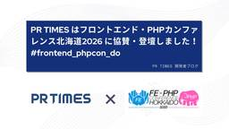

PR TIMES 開発者ブログ
https://developers.prtimes.com
こんにちは。普段フロントエンドを中心に開発している古園（@miyabin4113）です。 2026年6月6日（土）に開催された「フロントエンド・PHPカンファレンス北海道2026」にて、PR TIMESはプラチナスポンサーとして協賛しました。
フィード

フロントエンド・PHPカンファレンス北海道2026に協賛・登壇しました！ #frontend_phpcon_do
PR TIMES 開発者ブログ
こんにちは。普段フロントエンドを中心に開発している古園（@miyabin4113）です。 2026年6月6日（土）に開催された「フロントエンド・PHPカンファレンス北海道2026」にて、PR TIMESはプラチナスポンサ […]
3日前

PR TIMESはフロントエンドカンファレンス名古屋2026に協賛・登壇しました！ #fec_nagoya
PR TIMES 開発者ブログ
こんにちは。フロントエンドエンジニアの小張（@kobari41257）です。 2026年5月9日に開催されたフロントエンドカンファレンス名古屋2026に、PR TIMESはスポンサーとして協賛し、ブースの出展およびLT登 […]
16日前
PR TIMES はフロントエンド・PHPカンファレンス北海道2026 に協賛・登壇します！ #frontend_phpcon_do
PR TIMES 開発者ブログ
こんにちは。フロントエンドエンジニアの桐澤（@kiririLee）です。 PR TIMESは、フロントエンド・PHPカンファレンス北海道2026にプラチナスポンサーとして協賛いたします。また、同イベントに当社から2名のエ […]
1ヶ月前
PR TIMES は Laravel Live Japan に協賛・登壇します！
PR TIMES 開発者ブログ
こんにちは！PR TIMESの田中 湧大（@Romira915）です。普段はエンジニアとして、プレスリリース配信サービス PR TIMES の開発を行っています。 PR TIMES は Laravel […]
1ヶ月前
メール到達性を支える、プレスリリース内URLのドメイン評価の仕組み
PR TIMES 開発者ブログ
こんにちは。バックエンドエンジニアの筒井（@tsuttsun_wind）です。 PR TIMESでは、プレスリリースを個人・メディアユーザーやメディアリストに向けてメール配信しています。 2026年1月中旬ごろ、Micr […]
2ヶ月前
XO から Oxlint に移行しました
PR TIMES 開発者ブログ
こんにちは、フロントエンドエンジニアのやなぎ（@apple_yagi）です。 PR TIMESでは2023年9月から XO をリンター・フォーマッターとして使ってきましたが、先日 Oxlint に移行しました。本エントリ […]
2ヶ月前
PR TIMES は PHPカンファレンス香川2026に協賛・登壇します！ #phpconkagawa
PR TIMES 開発者ブログ
こんにちは！PR TIMES の河瀨翔吾（@shogogg）です。エンジニアリングマネージャーとして、プレスリリース配信サービス PR TIMES の開発や開発チームのマネジメント、業務改善、採用などを行っています。好き […]
2ヶ月前
PR TIMES HACKATHON 2026 Springを開催しました！
PR TIMES 開発者ブログ
こんにちは、エンジニアリングマネージャーの宮崎（@sucalul）です。 今回は3月9日(月)〜11日(水)に開催したPR TIMES HACKATHON 2026 Springでやったことについて書きたいと思います。 […]
2ヶ月前
PR TIMESはフロントエンドカンファレンス名古屋2026に協賛・登壇します！ #fec_nagoya
PR TIMES 開発者ブログ
こんにちは。フロントエンドエンジニアの小張（@kobari41257）です。 PR TIMESは、フロントエンドカンファレンス名古屋2026にゴールドスポンサーとして協賛いたします。また、同イベントに当社から1名のエンジ […]
3ヶ月前
Gmail送信前確認用Chrome拡張の内製化
PR TIMES 開発者ブログ
こんにちは、PR TIMESでインターンをしている工藤（@k8035004287922）です。 今回は、社内の一部部署で必須運用されていたGmail送信前の誤送信確認用Chrome拡張を、社内要件に合わせて内製した取り組 […]
3ヶ月前